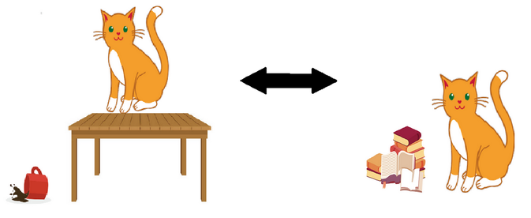

Superposition¶
As we saw in the section on the double slit experiment, quantum objects can be in a superposition. This means that they can occupy more than one state at once. In the double slit experiment, the electron seemed to travel through both slits at once!
There is no way to figure out which state the object is actually in — as you’ve seen in the double slit experiment, quantum objects don’t like to be measured. If a quantum object is observed, it will start behaving normally, and all the information that was contained in that superposition will be lost.
Think of it this way: cats sometimes enjoy vexing their owners by knocking random objects off tables and generally acting … catty (pun intended). However, they seem to do this when nobody is in the room. If someone enters the room and sees them, they suddenly are on their best behaviour. Though it might seem counter intuitive, these types of properties are what give quantum computers their power.

A great way to visualize this is to re-tell a classic tale in Greek mythology, with a quantum spin! If you’ve ever done a bit of Greek mythology in school, then you might recognize this tale! Theseus, a Greek hero, has just slain a mythical beast and has to travel through a massive labyrinth to get home. The labyrinth is so large that a single wrong turn could land him stuck there forever.
He’s been given a glowing ball of yarn that he can measure out as he walks, so that he can retrace his steps if he needs to. There are hundreds of branches, and millions of possible unique paths. How many tries would it take him to get out of the maze?
What he has to do is try each path one branch at a time, using the ball of yarn to backtrack if he hits a wall. This is an exhaustive process, and it might take him years to try every single path! However, he will eventually get out of the maze. This is how classical computers approach problem solving.

You might have heard about how easily passwords can be hacked —a hacker will use a dictionary of common words to try and guess a password, one guess at a time. This is why some encryption is incredibly secure: trying to crack it brute-force would take millions of years! When it comes to encryption, complexity is our only security.
If we drop a quantum object at the entrance of the maze and tell it to find a way out, the object will stand perfectly still at the entrance and sent out an infinite number of copies of itself ( a superposition of itself, one could say) to try out all paths at the same instant. Then it will ‘sniff out’ the correct path, and proceed immediately down it with certainty.

This is how quantum computers are able to take a problem that might be extremely time consuming to solve classically and solve it much more quickly using some crazy quantum properties.
Of course, there is a limit to this. Quantum computers are not generally faster than classical computers: in fact, for many problems, they wouldn’t do much better than a classical computers. There are a few quantum algorithms that can be applied to a special class of computer problems— such as the maze problem we saw above— that yield solutions for which the decrease in solve time is substantial.
These problems, spanning the fields of cyber-security, chemistry, medicine, and physics are so important to our lives that enormous effort has been put into developing these quantum computers.
We’ll explore some of these problems in the next module.